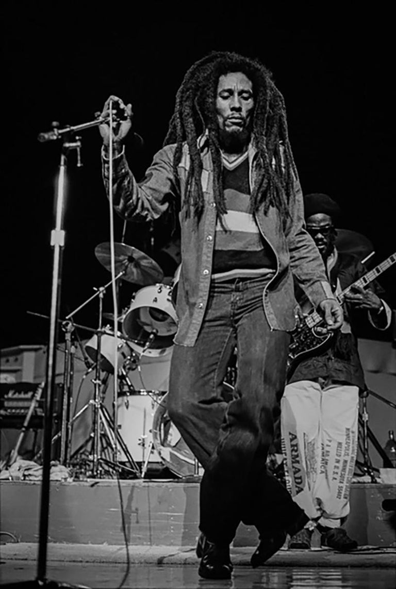
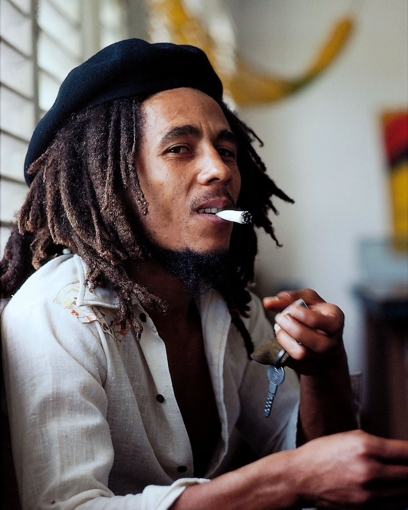
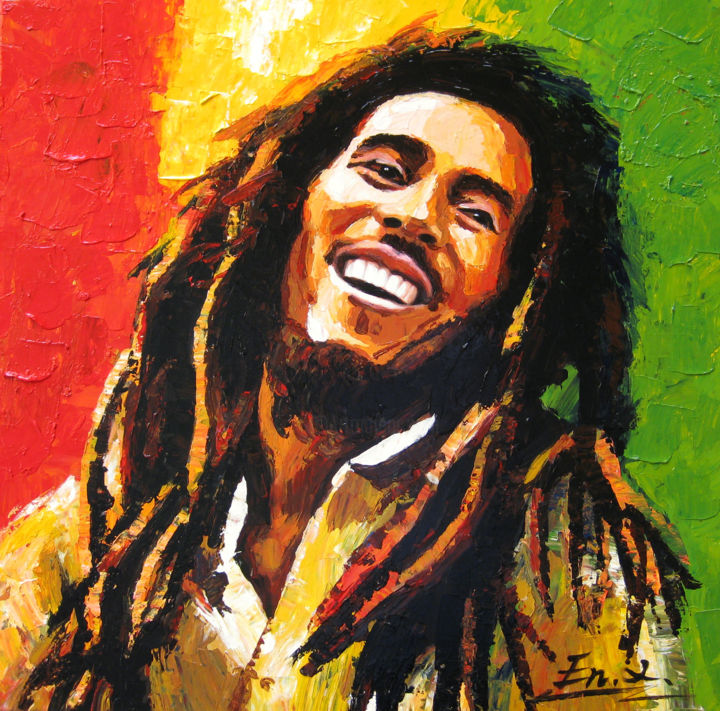
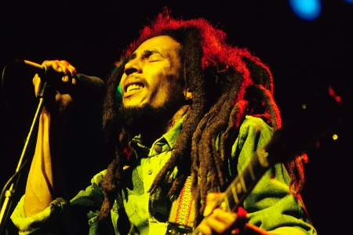
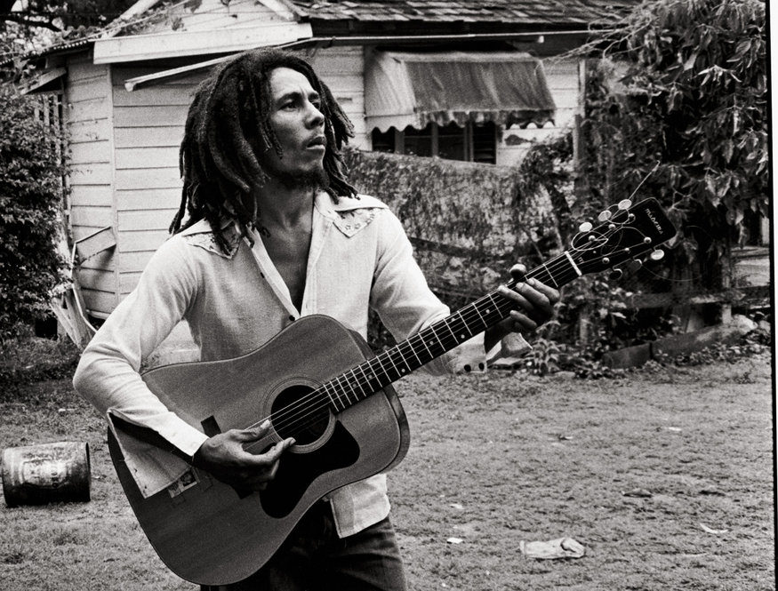
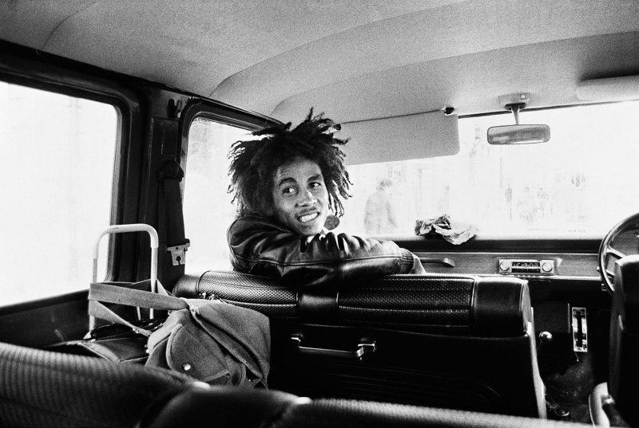

Bob Marley 1945-1981
King of Reggae
Bob Marley 1945-1981
Today, the distinguished reggae artist , the Hon. Robert Nesta Marley, popularly known as Bob Marley is regarded as one of the most talented musical legend of all times. With his passion for music and creativity the legend charted his own course in the music industry as a unique songwriter, singer and performer. He is regarded and accepted world wide as the “King of Reggae” and has successfully transcended three Jamaican genres from 1960 through to the 1980s. These include Rock Steady, Ska and Reggae.
Marley’s passion for music was reflected in his performance on stage with swaying long locs, sometimes closed eyes and beautiful heart felt melodies. His passion often instilled excitement in audience as he rocked stages and his guitar with the very beat from his soul. Marley’s music was filled with his philosophy with emphasis primarily placed on love, peace, equality and his spirituality. His passion played a huge part in its popularity then and today world wide with many still listening to his music in places such as Europe, America, African and the Caribbean.
**Information courtesy of Caribbean International Network (CIN)
Emancipate yourselves from mental slavery. None but ourselves can free our minds.
Bob Marley
For more information, please check on Bob Marley's Wikipedia